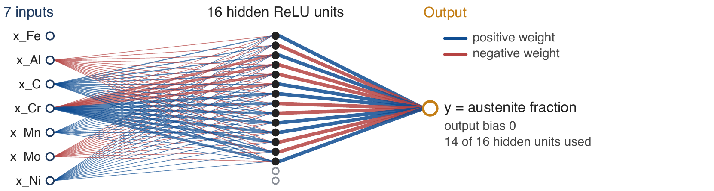

MATERIALS SCIENCE & ENGINEERING
TEXAS A&M UNIVERSITY
Department of Materials Science and Engineering
46

The model's own account (self-report)
The fcc fraction is a clipped ramp, min(max(0.5 + A/7, 0), 1 − P). A is an austenite potential in at.%: Ni +1, Mn +0.5, C +4.5, Cr −0.55, Mo −1.3, Al −1.6. P is a cap for carbides, sigma, Laves and B2. Each ramp takes two ReLUs; Cr at 0, 20 and 24 at.% has its own ramps.
Opus 5.5, reply 1 of 2
145 weights, no data
14 of 16 hidden units used
ρ alone: 0.76 (2 replies)
extrapolation: 0.28